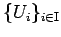
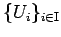
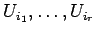
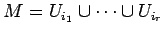
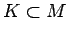
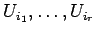
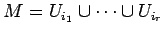
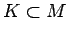

Inhalt Index DeskTop Bronstein

 Dynamische Systeme und Chaos Gewöhnliche Differentialgleichungen und Abbildungen Dynamische Systeme Invariante Mengen
Dynamische Systeme und Chaos Gewöhnliche Differentialgleichungen und Abbildungen Dynamische Systeme Invariante Mengen


Sei  ein metrischer Raum. Ein Mengensystem  aus offenen Mengen heißt offene Überdeckung von
ein metrischer Raum. Ein Mengensystem  aus offenen Mengen heißt offene Überdeckung von  , wenn jeder Punkt aus M in mindestens einem Ui liegt. Der metrische Raum
, wenn jeder Punkt aus M in mindestens einem Ui liegt. Der metrische Raum  heißt kompakt, wenn aus jeder offenen Überdeckung von M endlich viele  ausgewählt werden können, so daß  ist. Die Menge  heißt kompakt, wenn sie als Teilraum kompakt ist.
heißt kompakt, wenn aus jeder offenen Überdeckung von M endlich viele  ausgewählt werden können, so daß  ist. Die Menge  heißt kompakt, wenn sie als Teilraum kompakt ist.